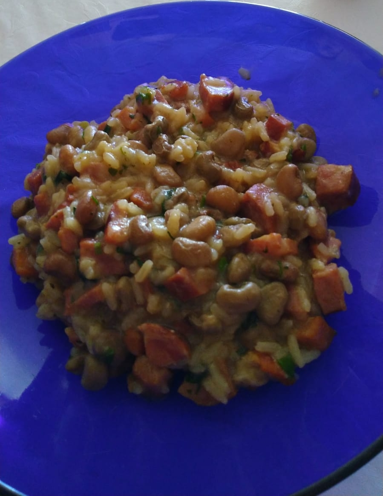

Baião de Dois

traditional brazilian dish that is simple and quick to make, great for weekend lunch!
Ingredients
- 500g green beans
- 500g of chopped calabria sausage
- 250g of chopped bacon
- 1 teacups of uncooked rice
- 4 crushed garlic cloves
- 2 chopped medium size onions
- salt and black pepper
- green onions
- cilantro
Steps
- Heat up a pot with olive oil and add the bacon. Fry it until golden
- Add the onions. Fry it until golden
- Add the sausage. Fry it until golden
- Add the garlic and let it fry lightly. Make sure to stir so it doesn't burn
- Add the green beans on boiling water and let it boil for 5min
- Drain the beans,wash them and add them to the pot. Stir lightly
- Add 1L of boiling water to the pot. Let it cook for 5min
- Add the rice.Season with salt and black pepper. Let it cook until the water starts drying up
- When the rice is cooked, keep stirring while on low heat according to your preference. Some like it wetter others more dry
- Season with green onions and cilantro. Stir for a bit
- Once done, serve it while hot